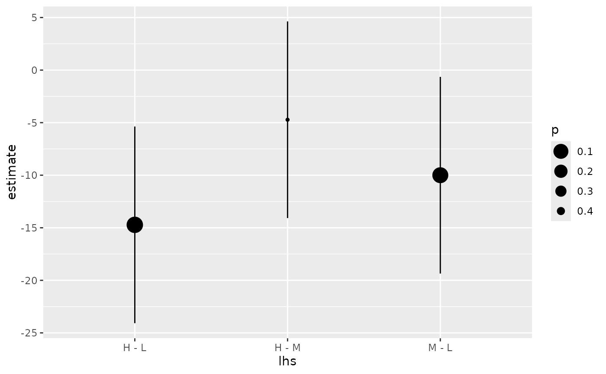

Tidy summarizes information about the components of a model. A model component might be a single term in a regression, a single hypothesis, a cluster, or a class. Exactly what tidy considers to be a model component varies cross models but is usually self-evident. If a model has several distinct types of components, you will need to specify which components to return.
# S3 method for summary.glht tidy(x, ...)
| x | A |
|---|---|
| ... | Additional arguments. Not used. Needed to match generic
signature only. Cautionary note: Misspelled arguments will be
absorbed in |
tidy(), multcomp::summary.glht(), multcomp::glht()
Other multcomp tidiers: tidy.cld,
tidy.confint.glht, tidy.glht
A tibble::tibble() with columns:
The estimated value of the regression term.
Left hand side.
The two-sided p-value associated with the observed statistic.
Right hand side.
The value of a T-statistic to use in a hypothesis that the regression term is non-zero.
The standard error of the regression term.
library(multcomp) library(ggplot2) amod <- aov(breaks ~ wool + tension, data = warpbreaks) wht <- glht(amod, linfct = mcp(tension = "Tukey")) tidy(wht)#> # A tibble: 3 x 3 #> lhs rhs estimate #> <chr> <dbl> <dbl> #> 1 M - L 0 -10. #> 2 H - L 0 -14.7 #> 3 H - M 0 -4.72#> # A tibble: 3 x 5 #> lhs rhs estimate conf.low conf.high #> <chr> <dbl> <dbl> <dbl> <dbl> #> 1 M - L 0 -10. -19.4 -0.650 #> 2 H - L 0 -14.7 -24.1 -5.37 #> 3 H - M 0 -4.72 -14.1 4.63#> # A tibble: 3 x 6 #> lhs rhs estimate std.error statistic p.value #> <chr> <dbl> <dbl> <dbl> <dbl> <dbl> #> 1 M - L 0 -10. 3.87 -2.58 0.0336 #> 2 H - L 0 -14.7 3.87 -3.80 0.00113 #> 3 H - M 0 -4.72 3.87 -1.22 0.447ggplot(mapping = aes(lhs, estimate)) + geom_linerange(aes(ymin = lwr, ymax = upr), data = CI) + geom_point(aes(size = p), data = summary(wht)) + scale_size(trans = "reverse")#> # A tibble: 3 x 2 #> lhs letters #> <chr> <chr> #> 1 L b #> 2 M a #> 3 H a